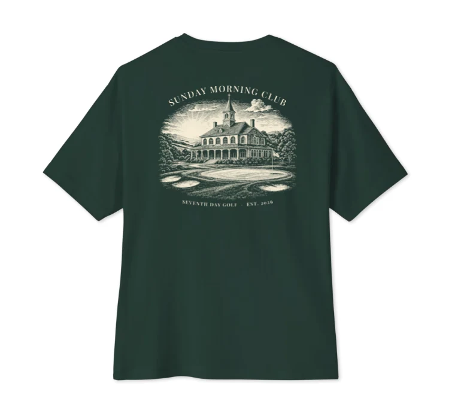

Tee · 01Forest green · Bella+Canvas 6 oz
Sunday Morning Club Oversized Tee
An oversized forest-green tee for early tee times. A small cream wordmark on the chest, and an engraved Sunday Morning Club clubhouse scene across the back.
Coming December 2026
Notify me